High Resolution Layer Small Landscape Features 2021 – Algorithm Theoretical Basis Document (ATBD)
Copernicus Land Monitoring Service
Small Landscape Features, Woody Vegetation Layer, Deep Learning, Sentinel-2 data, Very High Resolution imagery, Convolutional Neural Network, Time-series analysis, Object-based image analysis, Super-resolution mapping, Change detection
Contact:
European Environment Agency (EEA)
Kongens Nytorv 6
1050 Copenhagen K
Denmark
https://land.copernicus.eu/
1 Executive summary
This document provides a comprehensive overview of the theoretical basis for the algorithms used to derive the High Resolution Layer Small Landscape Feature (HRL SLF). This product suite is designed to offer accurate and reliable measurements of woody vegetation and small landscape features (including urban trees) using data acquired from Very High Resolution (VHR) sensor as well as Sentinel-2 data.
The algorithms detailed in this document are developed to process raw satellite data into meaningful thematic products. Key components include:
Source data: Description of the satellite and sensor specifications, including spatial, temporal, and spectral resolutions. This section also covers ancillary datasets used for calibration and validation.
Preprocessing: Steps taken to correct and calibrate raw data, including radiometric and geometric corrections, time series parametrization, production of masks and reference database for calibration.
Processing: Steps taken to train classification models and identify woody vegetation from Earth Observation (EO) datasets, leading to the Woody Vegetation Layer (WVL) output. This section also covers the Change detection between 2018 and 2021 reference years.
Post-Processing: Steps taken to derive, from the WVL, the other layers of the SLF suite: Small Woody Features (SWF) and Street Tree Layer (STL).
Internal Verification: Methods used to verify the accuracy and reliability of the derived dataset.
Known technical issues: Issues encountered during production, or known limitations of the products.
2 Background of the document
2.1 Scope and objectives
This Algorithm Theoretical Basis Document summarizes the product characteristics and describes production methodologies and workflows of the HRL SLF 2021.
2.2 Content and structure
The document is structured as follows:
Chapter 1 provides the executive summary of the project along with a general information about European Union’s Earth Observation Programme and Copernicus Land Monitoring Service (CLMS).
Chapter 2 outlines the scope, content and structure of this document.
Chapter 3 details the general thematic content and product descriptions with the methodology, workflows and internal quality control processes.
Chapter 4 details the quality control and thematic internal verification processes.
Chapter 5 presents the known technical limitations and residual technical issues.
Chapter 6 defines key terms used in the document.
The Abbreviations & Acronyms, References, Annex, and Appendices Chapters provide citations, supplementary information, and additional reference materials.
3 Methodology
The present section describes in detail the methodology applied for the production of all the HRL SLF 2021 layers, including the change layer 2018-2021.
Table 1: Overview table of methodology
| Category Title | Description/Details |
|---|---|
| Retrieval Methodology | Deep Learning Convolutional Neural Network |
| Input Data | Sentinel-2 (S2A, S2B), Level-2ª (processing baseline 05.11), retrieved via ESA Copernicus Open Access HubVHR_IMAGE_2021 retrieved via ESA Data WareHouse (DWH) |
| Ancillary Data | CLMS SWF2018; CLMS HRL VLCC 2021; CLMS Urban Atlas 2021; Meta Global Canopy Height |
| Processing Workflow | Cloud masking, atmospheric correction, time-series compositing, deep learning-based classification, mosaicking, vectorization, aggregation |
| Spatial/Temporal Resolution | 5m / 100m spatial resolution; 3 years update |
| Validation and Accuracy | Validation using independent visual interpretation of verification samples, accuracy assessment with producer’s and user’s accuracy calculations. |
3.1 Methodology and workflow
Figure 1 below shows an overview of the workflow, which can be sub-divided in 3 main steps:
Preprocessing of input EO imagery and ancillary datasets: reprojection, compositing, time series parameters computation, clip to Area Of Interest (AOI), reclassification, encoding.
Processing: training of classification models, inference, combination of individual outputs, change detection.
Post-processing: application of geometric rules and integration to derive final layers.
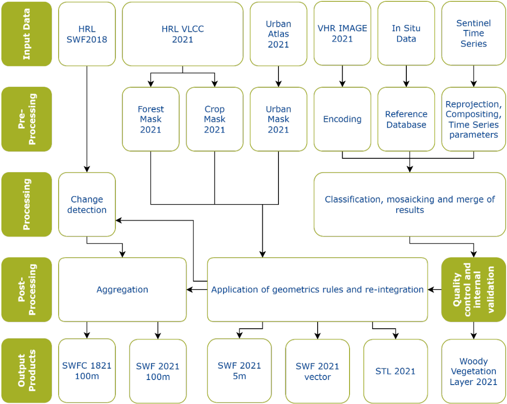
3.2 Source data
HRL SLF 2021 production relies on analysis and combination of different inputs datasets considered as source data.
3.2.1 EO data
Two different EO datasets are used for the production of HRL SLF 2021 products:
VHR_IMAGE_2021: retrieved from ESA DWH through Copernicus Contributing Missions, this dataset provides a Very High Resolution (VHR) coverage of EEA38+UK for the reference year 2021. It contains VHR multispectral (RGB+NIR) products (2-4m spatial resolution) acquired between 2020 and 2022, in ETRS89-LAEA projection (EPSG:3035). The following missions contributed to this dataset:
- Pleiades (28.68%)
- SuperView (17.33%)
- WorldView-2 and 3 (13.5%)
- Kompsat-2-3 (7.12%)
- Geoeye-1 (3.81%)
- SPOT6-7 (26.66%)
- TripleSat (0.63%)
- Geosat-2 (0.98%)
- Vision-1 (0.94%)
Sentinel-2 time-series:
For a said reference year, the full time series on Sentinel 2 data was utilized. (cf. Section 3.3)
3.2.2 Ancillary data
Several ancillary datasets were used to collect landcover information for the reference year 2021, which were then used for calibration and training of the classification models and/or for deriving additional layers used for masking purposes. The list of the datasets and their use is presented in the table below.
Table 2: Ancillary datasets used for HRL SLF production
| Source | Use | Reference |
|---|---|---|
| CLMS SWF 2018 | Training | https://land.copernicus.eu/ |
| CLMS VLCC TCD 2021 | Training + masking | https://land.copernicus.eu/ |
| CLMS VLCC CTY 2021 | Masking | https://land.copernicus.eu/ |
| CLMS Urban Atlas 2021 | Masking | https://land.copernicus.eu/ |
| Global Canopy Height 2009-2020 | Training | https://gee-community-catalog.org/projects/meta_trees/ |
| Environmental zones | Stratification for reference database sampling | https://www.eea.europa.eu/en/datahub/datahubitem-view/c8c4144a-8c0e-4686-9422-80dbf86bc0cb |
| CLMS CLCplus Backbone 2021 | Training | https://land.copernicus.eu/ |
3.3 Pre-processing
3.3.1 Input data for pre-processing
3.3.1.1 VHR data
The complete VHR_IMAGE_2021 dataset was utilized for processing.
3.3.1.2 Sentinel Data
The complete Sentinel-2 archive for the specified year and tile was utilized for processing. A dedicated preprocessing routine was applied to Level-2A data across the entire time series to generate cloud-free percentile composites of the corresponding Sentinel-2 bands, along with a harmonic fitting of the time series. For further details, refer to Section 3.3.2.
3.3.1.3 Masks
Forest mask
HRL VLCC TCD 2021 and HRL VLCC CTY 2021 were the two datasets utilized for deriving the Forest Mask 2021 layer.
Crop mask
HRL VLCC CTY 2021 was utilized for deriving the Crop Mask 2021 layer.
Urban mask
Urban Atlas LULC vector layer was utilized as input for deriving Urban Mask 2021 used in the Street Tree Layer production.
3.3.1.4 Reference Database
The reference database contains landcover information used for training and calibration of the classification algorithms. HRL VLCC TCD 2021, HRL SWF 2018 and Global Canopy height dataset were the input datasets for deriving the thematic information contained in this database.
Environmental zones (Metzger, Marc J. 2018) were used as a source of stratification for establishing location of reference database samples.
3.3.2 Pre-processing methodology
3.3.2.1 VHR data
The images from VHR_IMAGE_2021 dataset was downloaded from ESA DWH and stored on a secured and dedicated cloud infrastructure. They were then pre-processed for the training and inference phases of the classification.
For training:
Each image overlapping a sample from the reference database (refer to next section) for calibration was:
Clipped to the extent of the sample.
Converted from 16bits to 8bits (stretching each band between 0 and 255 from its min and max).
Converted to COG format.
For inference:
Each image to be predicted for the production phase (i.e. VHR_IMAGE_2021 full dataset) was:
Converted from 16bits to 8bits (stretching each band between 0 and 255 from its min and max).
Converted to COG format.
3.3.2.2 Sentinel Data
The Sentinel-2 processing workflow began with time-series data of Sentinel-2 L2A products, organized per tile in the UTM projection, and made accessible through various cloud providers. The analysis included all 10m and 20m spectral bands, as well as the Scene Classification Layer (SCL) for cloud weighting. Within a standard year, all available scenes were composited into cloud-free images, one per band. This was achieved by calculating the 20th percentile for each tile and band, which provides spectral information for each pixel. Additionally, a 90th-percentile NDVI layer was generated and used as input for training and classification.
The time-series observations also capture intra-annual land cover variations, which were leveraged for further analysis. These variations were extracted using ordinary least squares fit to the function:
\(f(t)=c_0+\sum_{k=0}^{H}(\alpha_{k}\mathrm{sin}\left(k\omega t\right)+\beta_{k}\mathrm{cos}\left(k\omega t\right))\)
Here, the base frequency (ω) is set to 2π per year, enabling the model to describe the seasonal NDVI dynamics and provide temporal insights. This methodology, proven effective in other CLMS productions such as the Imperviousness products, was highly optimized for robustness and resource efficiency.
3.3.2.3 Masks
Forest Mask
The Forest Mask is designed to exclude specific densely tree covered areas.
A 10% canopy cover threshold was applied to HRL TCD 2021, to meet the FAO forest definition. A morphological filter was then applied to remove linear elements that could represent valid SWF from the forest mask (ex: large hedgerow connected to a forest which would be included in the forest mask after the first step of thresholding). Thus, only dense and compact forested areas were kept in the Forest Mask.
A minimal mapping unit (MMU) of 5 ha was applied, to remove small forest areas from the mask. The application of this MMU filter was necessary because of the different spatial resolution of the input imagery that were used to produce HRL TCD 2021 and the HRL SWF 2021 product, which makes the presence of features below 5 ha likely.
A 10 m external buffer was applied to prevent wrongly detected SWF at forest boundaries due to the different spatial resolution between the HRL TCD 2021 and HRL SWF 2021 product (and respective input data).
Areas covered by Crop Mask (see below) were excluded from Forest Mask.
Crop Mask
The Crop Mask is an essential component of the workflow and was designed to exclude specific land-use classes that are indicative of agricultural activity.
The mask was derived from the VLCC CTY product, a comprehensive dataset that categorizes land use based on crop types and other vegetation classes.
All classes within the VLCC CTY product that signify agricultural usage were included in the mask. This ensured a broad and accurate representation of areas used for farming activities. The output is a binary layer crop/non-crop.
Urban Mask
The Urban Mask is an essential component of the workflow as it defines the extent of the STL product. It was derived from the UA LULC 2021 product and consists of urban areas (class 1) with the exclusion of road and railway networks connecting cities and villages. To do so, urban areas without including roads were selected first and converted to a raster format aligned with EEA grid. Subsequently, a dilation followed by an erosion allowed to fill-in roads areas within dense urban. Finaly, the urban mask is converted back to vector format. Illustrations below present those different steps over a subset of Vienna FUA: on top, Urban Atlas 2021 LULC layer (red: urban areas (code level 1 : “1”), grey: non-urban areas). On centre, selection of urban areas without transportation network. On bottom, final urban mask used as area of interest for STL production.
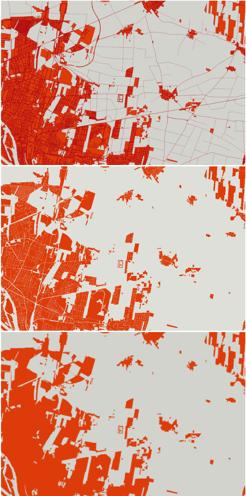
3.3.2.4 Reference Database
The reference database contains landcover information about woody vegetation presence used for training and calibrating classification algorithms.
To maximize the applicability of this reference dataset and foster economies of scale for its generation, the selection of samples was performed automatically, based on a stratified approach considering (see Figure 3):
Environmental zones to reflect the spectrally heterogeneous coverage of woody vegetation throughout Europe (Figure 3 Top)
Heterogeneity of input datasets (i.e. VHR_IMAGE_2021 dataset contains imagery from different sensors) (Figure 3 Centre)
Urban and rural areas (Figure 3 Bottom)
Therefore, a sufficiently high number of reference samples (10 000) were selected to extract representative reference statistics in order to successfully train the supervised learning algorithm (Chen & Stow, 2002) with regards of the complexity and diversity of the area to be mapped. Each reference sample consists of a 2560x2560m cell containing woody vs non-woody information. The geographic distribution of the reference training samples is illustrated in Figure 4 below.
This thematic information was first extracted from ancillary datasets (HRL SWF 2018, HRL TCD 2021, CLC+BB 2021, Global Canopy Height Map), and was then visually assessed and corrected using VHR_IMAGE_2021 as guiding reference imagery to ensure consistency between reference dataset and EO dataset.
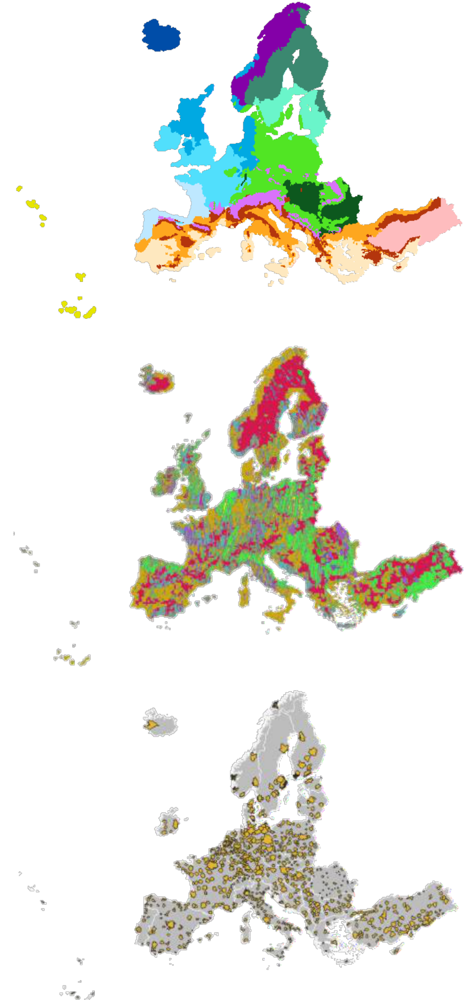
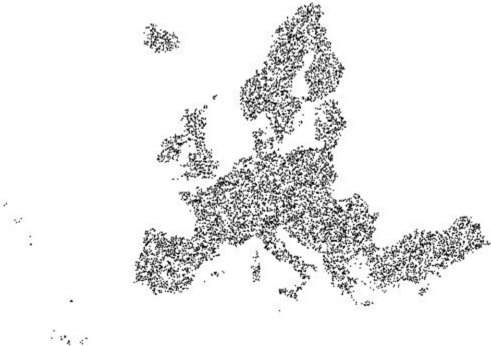
Each sample in the vector reference database was:
Rasterized with values 0 and 1.
Set to 255 (no data value) if the pixels in the corresponding image were no-data pixels or unclassifiable pixels (clouds or cloud shadows).
Converted to COG format.
An example of a reference database sample is illustrated in Figure 5 below. One the left, the initial vector result of visual and manual enhancement. On the right, the rasterized version ready to be ingested in the training process.
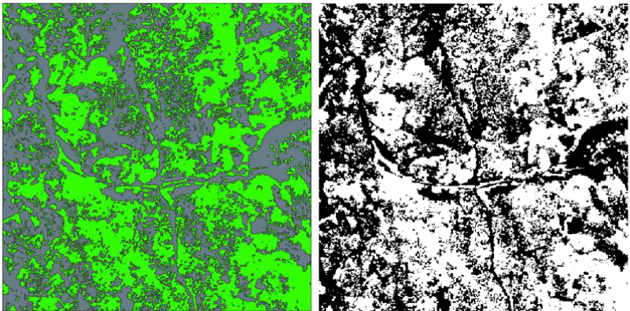
3.3.3 Intermediate outputs
3.3.3.1 VHR data
Training VHR images dataset:
Pre-processing generated a dataset of 8-bit VHR images in COG format, still in 4 bands (red, blue, green, and near infrared), with the same spatial coverage and size as the patches of the reference database. Here, the VHR scenes are clipped to the extent of the corresponding reference patches.
Inference VHR images dataset:
Pre-processing generated a dataset of 8-bit VHR images in COG format, without any clipping.
3.3.3.2 Sentinel Data
The key layers generated from the Sentinel-2 preprocessing that directly serve as input for the deep learning algorithm are the following:
Table 3: Parameters for S2 time series analysis
| Parameter Name | Bands | Total number of layers |
|---|---|---|
| 20th percentile | B02, B03, B04, B05, B06, B07, B08, B8A, B11, B12 | 10 |
| 90th percentile | NDVI | 1 |
| 3rd order Fourier Series coefficients | NDVI | 7 |
3.3.3.3 Reference Database
Pre-processing generated a dataset of 8-bit images in COG format, in 1 band, representing 3 different values: 0 – non-tree; 1 – tree; 255 – no-data, with the same spatial coverage and size as the patches of the training VHR images database.
3.4 Processing
3.4.1 Processing methodology
3.4.1.1 VHR classification
Classification using VHR data was based on the SatlasPretrain Foundation Model (Bastani et al, 2023). The model was pretrained on Satlaspretrain dataset, which is a large-scale pre-training dataset for remote sensing image understanding. The SatlasPretrain model consists of three main components: backbone, Feature Pyramid Network (FPN), and prediction head that allow to classify an image into a thematic information.
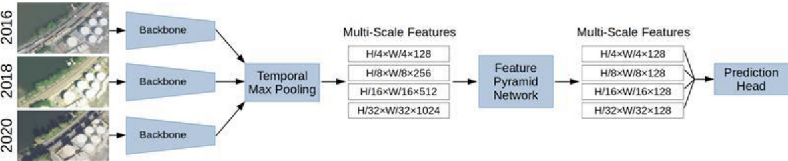
Of the components shown in Figure 6, the backbone + FPN of the aerial pre-trained model (0.5-2m/px high-res imagery, Single-image, RGB) were used as a basis to take advantage of the pre-trained model, then the segmentation prediction head was attached and fine-tuned to woody vegetation detection using the reference database.
The images used are 4-band images (Red, Green, Blue, and Near Infrared), so to manage compatibility with the 3-band (RGB) model, modifications were made as follows: the first three bands (RGB) were passed into the backbone, then the last band (Near Infrared) was concatenated with the extracted features in the latent space, before passing the whole into the prediction head.
The prediction head is a U-Net (Ronneberger et al, 2015) architecture with a cross entropy loss.
Once the model has been finetuned, inference (segmentation) was performed on each image, using the model checkpoint.
The inference’s outputs are probability maps of woody vegetation for each image. After all the images have been classified individually, they were mosaicked into tiles corresponding to production units (EEA 100km grid cells). This was performed as follows:
For each pixel of the production unit, the number of observations (= number of VHR scenes) was collected.
Individual probability maps for woody vegetation were summed into a mosaic which extent corresponds to the production unit’s extent.
The “sum mosaic” was divided by the number of observations, for each pixel.
The result was a harmonized probability map 0-255 over the extent of the production unit.
3.4.1.2 Sentinel classification
The classification using Sentinel-2 data leveraged a modified U-Net architecture. Although Sentinel-2 provides lower spatial resolution (10m and 20m native resolutions) compared to Very High Resolution (VHR) datasets, its higher acquisition frequency and richer spectral resolution serve as essential sources of information. These attributes enhance the classification process, improving both accuracy and the overall quality of the output.
In a standard U-Net framework, the classification output matches the resolution of the highest input, yielding results at 10m resolution. However, the U-Net architecture has an advanced capability: it can be trained to produce outputs at finer resolutions, a process known as “super resolution.” This approach is similar to state-of-the-art upscaling methods and has been successfully used to generate high-resolution delineations of tree lines and even single trees (see Figure 7 below).
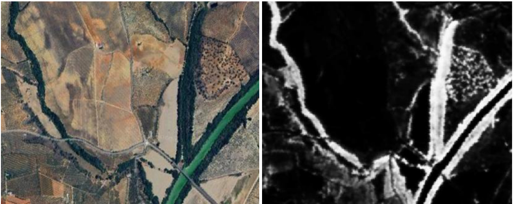
For the SWF production, this technique was adapted to directly predict woody vegetation probabilities at resolutions of 5m. This refinement facilitated a seamless comparison of maps generated from both VHR and Sentinel-2 datasets during the merging process.
3.4.1.3 Classification merge
Outputs of both VHR and Sentinel 2 classifications steps consists of probability maps of woody vegetation presence at 5m resolution. Probability maps were combined based on a decision tree to optimize mapping of woody vegetation while limiting propagation of artefacts that could have existed on one dataset but not in the other. This decision tree took into account environmental zones to deal with regional diversity of European landscapes. For Mediterranean landscapes which contains many low-density forested areas or olive plantation with isolated trees, a higher weight is given to VHR classification compared to Sentinel-2 classification. On the opposite, VHR output in arctic regions is quite impacted by high acquisition angles and cloud coverage. Time series of Sentinel 2 allow to mitigate this effect, and thus Sentinel-2 classification outputs have a higher weight in the final product compared to VHR classification outputs. Weighting have been assessed visually to ensure consistent results across landscape and avoiding border effects between neighbouring environmental zones.
3.4.1.4 Change identification processing
In progress.
3.5 Post-processing
3.5.1 Overview
The merged result from the previous step was then used as input for production of the final output. This final output consists of raster products in 5m and 10m, as well as a vector product. As a general overview, the following steps are applied:
Raster Property Extraction: Raster processing algorithms were used as a first step in distinguishing linear and patchy features. Features were extracted and stored in an intermediate database.
Raster to Vector Conversion: The raster data was vectorized into a spatial database for further analysis and the previously extracted properties were merged into the dataset.
Vector Property Extraction: Key properties such as area, and crop coverage were calculated for each feature.
Feature Classification and Simplification: Features were classified and refined based on their properties according to the product specifications.
Filtering: Features that do not meet the specifications were removed from the intermediate vector product. Exception: Every geometry that was connected to a valid feature was re-added if it is not covered by agriculture.
Final Output Creation: The remaining geometries were simplified and rasterized into final 5m and 100m resolution outputs. The remaining features were stored in a final vector file in Geopackage format.
The primary goal of these steps was to derive properties that are needed for the application of the specifications summarized in Table 4 below:
Table 4: Geometric specifications of SWF
| Linear Structures | Patchy Structures | |
|---|---|---|
| Width | <= 30m | n/a |
| Length | >= 30m | n/a |
| Area | n/a | 200m² <= area <= 5000m² |
| Compactness | <= 0.785 | >= 0.785 |
Note: The table contains also the thresholds based on the compactness value. This was used in previous productions and is kept here for completeness. The current workflow replaces the compactness threshold with an algorithm based on erode and dilate operations. This was done to increase the robustness of the workflow and to allow for a better definition of derived properties such as width and length of a geometry.
The single steps necessary are described in more detail in the following sections.
3.5.2 3.5.2. Raster Property Extraction
Raster Property Extraction was the foundational step for identifying, analysing, and differentiating linear and patchy features in the dataset. This step involved calculating geometric and spatial properties that directly influence the final classification thresholds.
Distance Transform Calculation: A distance transform was calculated and stored for the entire raster. This transform measured the distance from each pixel to the nearest edge or boundary (i.e. to the nearest “forest-pixel”), enabling the computation of feature width and facilitating further operations.
Erosion and Dilation: Table 4 Figure 8 Using the width threshold defined in the product specification (Table 4), an erosion operation was performed (using half the with) followed by dilation. This sequence removed parts from the raster which are too thin to “survive” the erosion operation and was key to distinguish linear features from patchy ones (refer to Figure 7 for visual representation). This distinction is done by overlaying the processed raster with the original input which allowed for the classification of each pixel into linear and patchy feature candidates.
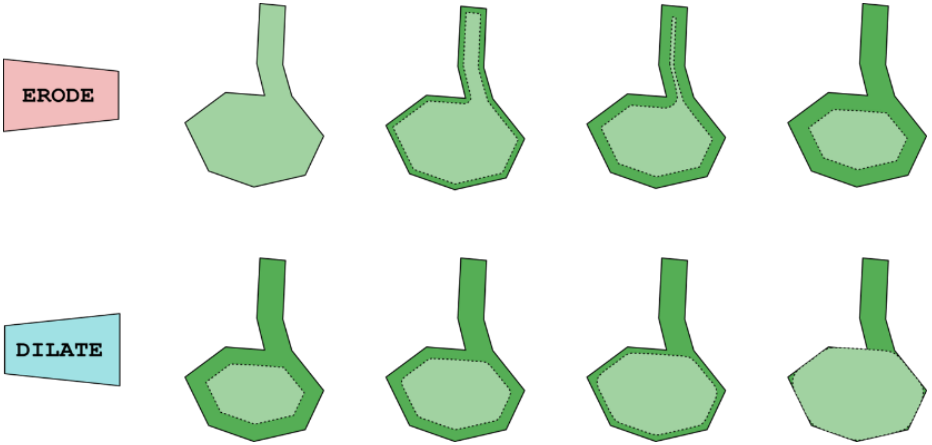
Connected Component Analysis
OpenCV’s connected component algorithm was applied to the processed raster. The algorithm assigned a unique identifier (ID) to each distinct feature, creating an “index raster” for efficient management of individual components.
Property Calculation for Each Component
For each connected component (or patch) in the raster, the following properties were calculated:
Width: Using the stored distance transformation, the width was determined as the maximum distance value inside the component. This ensures accurate measurement of feature dimensions.
Area Calculation: The area of the feature was calculated by summing the number of pixels within the connected component.
Crop Coverage Percentage: The percentage of crop area within each patch was computed by overlaying the crop mask. This value helped assess the interaction of the feature with crop zones.
3.5.3 Raster to Vector Conversion and Vector Property Extraction
The previously identified patches were converted to a Spatialite database for further analysis. In this step, the following operations were performed:
Definition and calculation of the polygon length: For each geometry in the database, the length was approximated by calculating the ratio between area and width.
Intermediate classes were defined for each geometry. These classes were:
Class 1: Linear features according to the definition
Class 2: Patchy features according to the definition
Class 3: Patchy Features that were outside of the area threshold
Class 4: Crop areas. These were patchy features that had more than 80% crop coverage
Class 5: Features that were connected to valid Geometries (Classes 1 and 2) and were not covered by crops (according to the threshold of 80%)
Class 6: Features that were connected to valid Geometries (Classes 1 and 2) and were covered by crops (according to the threshold of 80%)
- For the final product, Classes 1, 2 and 5 were extracted from the intermediate product (see Figure 9 below).
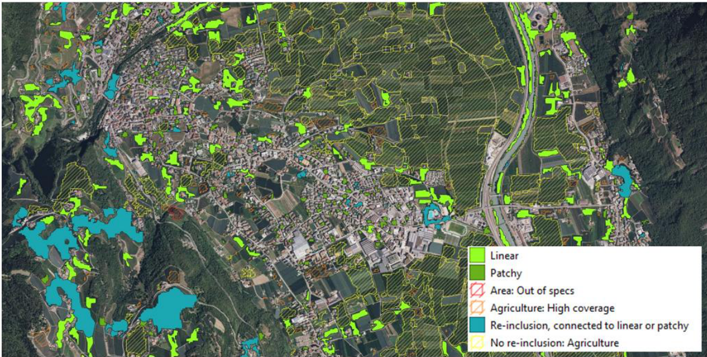
3.5.4 Filtering and Feature re-integration
Ideally, all linear and patchy features should be retained in the final product, as these represent the primary elements of interest. In the previous production, it became clear that the initial ruleset used to distinguish between linear, patchy, and other feature types did not fully capture what is typically understood as linear or patchy features. To address this, an approach was introduced to re-include features that were spatially connected to identified linear or patchy elements. This adjustment led to an output that more closely reflected common expectations and interpretations. In the most recent production, this re-inclusion approach was maintained, and an additional refinement was applied using the agricultural mask. This allowed for the exclusion of features located within crop or plantation areas – such as structured tree plantations – which, while technically tree-covered, are not intended to be part of the final product.
The final product includes:
All linear and patchy features as identified by the applied ruleset
All features that are spatially connected to these, with exceptions for agricultural areas
Agricultural areas are defined as features with more than 80% coverage by agriculture, according to the agricultural mask (see Section 3.3)
3.5.5 Final output creation
All remaining features underwent simplification using the Douglas-Peucker algorithm to reduce geometric complexity while preserving essential shapes. These simplified features were then converted back into a raster format. The primary raster product was generated at a 5m resolution, from which a 100m resolution version was created using mean aggregation. Additionally, the final geometries are stored in a Geopackage format for further use.
3.5.6 Aggregation
The 100-meter aggregated product was derived from the 5-meter full-resolution dataset. Pixel values were computed using a mean aggregation method, considering only valid pixels—excluding those with no data or located outside the defined area. Following aggregation, the official 100-meter boundary file was applied to ensure uniform and consistent spatial coverage.
3.5.7 Street Tree Layer (STL)
For each Urban Atlas FUAs, the WVL (cf. section 3.4) is clipped using the Urban Mask (cf section 3.3.2) to subset woody vegetation over urban areas identified by CLMS Urban Atlas LULC product.
Following this step, a dedicated post-processing is applied to obtain the STL product.
The intermediate raster is converted into a vector (polygon) format and the resulting geometries are simplified using a topology-aware Douglas-Peucker algorithm with a 5m tolerance.
Finally, the vector data is filtered to meet the Minimum Mapping Unit (MMU) requirement. All polygons with a total area of less than 500m² are removed. The remaining features constitute the final STL product.
Note on STL Methodology
Due to changes in the processing chain, improved detection algorithms, and changes in the quality of input imagery, the application of the minimum mapping width (MMW) of 10 m was deemed no longer necessary, unlike in previous STL releases produced under the Urban Atlas suite.
Two large features for instance, connected by a narrow “path” of less than 10m could be unmerged as results of the MMW rule, potentially causing both elements to be removed following the application of the MMU rule. Conversely, with a slightly wider path (even one pixel wide), the MMW rule would not apply leaving the entire large polygon untouched. Removing the MMW filter avoided this selection, thus leading to more consistent outputs without sacrificing the original mapping accuracy.
3.6 Output products
The HRL Small Landscape Features production outputs comprise four main primary status layers, provided in pan-European LAEA projection (EPSG:3035):
Woody Vegetation Layer at 5 m spatial resolution
SWF vector
SWF raster at 5 m spatial resolution
Street Tree Layer vector
Aggregated products (spatial resolution 100m) are also provided:
SWF Density raster at 100 m spatial resolution (in pan-European LAEA)
Mosaic of Small Woody Feature Change for the 2018-2021 period at 100 m spatial resolution
Furthermore, other auxiliary layers and reference datasets are provided:
Mosaic of Confidence Layer for WVL at 5 m spatial resolution
Parent Scene Identification Layer (PSIL) in vector format
Forest Mask 2021 and Crop Mask 2021 at 5m spatial resolution
Reference data used for training
Reference data used for internal quality control
All layers are distributed in tiles corresponding to 100km LAEA grid cells, with the exception of the PSIL and Reference databases which cover EEA38+UK without being sub-divided.
4 Quality control and production verification
The quantitative assessment of the thematic accuracy was based on stratified random samples compared to external datasets. The overall thematic accuracy, user’s accuracy, and producer’s accuracy of SWF product should be at least 80 % with a 95% confidence interval.
The validity of the classification was evaluated and illustrated in confusion matrices.
The Product Delivery and Quality Control Report is available to final users together with the data and gives a concise overview of relevant information about the product specifications and quality aspects.
In addition, the EEA has performed an independent external validation of the final products and written a Validation Report which users also have access to.
4.1 Stratification and Sampling Design
To ensure as much as possible consistency with previous production, and comparable accuracy figures between reference years, re-use of validation samples from HRL SWF 2018 and HRL SWF 2015 was implemented. The stratification and sampling design can be summarized as a combination of systematic and stratified approaches:
An extended LUCAS grid of 2x2km covering EEA38+UK extent was used as basis, where LUCAS points were selected as Primary Sample Units (PSU)
A stratification based on presence/absence of SWF was applied:
Commission stratum: SWF 100m raster product 1-100%
Omission stratum: SWF 100m raster product 0%
The number of sample units per stratum was defined such as to ensure a sufficient level of precision at reporting level.
In this approach, a PSU is a 100x100m square snapped to the EEA grid, representing one HRL 1ha product grid cell. Within each PSU, 20 Secondary Sample units (SSU) were randomly distributed. Each SSU correspond to a 5x5m HRL pixel. A weighting factor (p) was applied to each PSU and SSU to take into account the sampling bias introduced by the stratification:
\[ \hat{p}_{ij} = \left(\frac{1}{N}\right) \sum_{x \in (i,j)} \left(\frac{1}{\pi^{*\downarrow}_{uh}}\right) \]
Where i and j are the columns and rows in the matrix, N is the total number of possible units (population) and π is the sampling intensity for a given stratum.
The accuracy assessment in the HRL 2021 SWF was executed on two levels: a first assessment at Primary Sampling Unit level (PSU) and a second one at Secondary Sampling Unit level (SSU). The assessment at PSU level provided information about the presence or absence of SWF within the 100 x 100m squares and can directly compared to analysis made for previous production. Secondary Sample Units (SSU) within the PSU complement this information at PSU level documenting the spatial accuracy of the product. This approach was introduced during SWF 2018 production. SSUs are 20 randomly distributed points within each PSU considering a 5 x 5m area (pixel size) for the validation analysis.
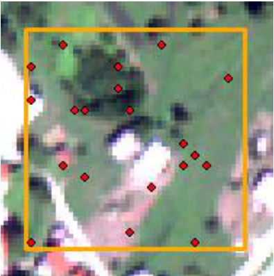
This approach of assessing Small Woody Features at PSU and at SSU level has also been used for the selection of PSU to be revisited during the 2021 validation. It can be assumed that a large proportion of woody vegetation remained unchanged in the 3 years’ period from 2018 to 2021, due to the highly stable nature of SWF vegetation cover. Hence the digitized SWF validation information (i.e. SWF that have been assessed, digitized and rasterized) for the year 2018 still remains valid to a large extent, meaning that SWF2018 validation result can agree with the SWF2021 product within a PSU. Where this is the case, no re-interpretation was needed for the reference year 2021. Unstable areas and their respective samples, however, were reinterpreted. The assessment of stability or instability of an area and the subsequent selection of the respective samples to be revisited were based on the rasterized 5m versions of both, the validation information of 2018 and the newly classified product for 2021. It comprised the following steps:
Using the initial sample base from 2018 and removing all PSU with 50% and more forest cover (using the SWF forest mask of 2021)
Comparison at PSU level: Comparing the rasterized validation information from 2018 (SWF18_ref) with the SWF 5m product information from 2021 (SWF21_product) within the 100 x 100m square, using a Minimum Mapping Unit (MMU) of 6 pixels, corresponding to a linear element of 30m length and 5m width:
if SWF18_ref was < 6 pixels within a PSU = absence of SWF
if SWF18_ref was ≥ 6 pixels within a PSU = presence of SWF
if SWF21_product was < 6 pixels within a PSU = absence of SWF
if SWF21_product was ≥ 6 pixels within a PSU = presence of SWF
If this comparison showed an agreement of SWF18_ref vs. SWF21_product concerning SWF presence/absence characteristic results, this PSU was being flagged as not to be revisited in validation. In case of a disagreement between SWF18_ref vs. SWF21_product concerning SWF presence/absence, this PSU was being flagged as to be revisited in validation.
- The same information of SWF18_ref and SWF21_product was compared at SSU level referring to all PSUs remaining after step 1. The analysis was pixel-based, any selected pixel/SSU was assessed, and no threshold was used at SSU level:
any pixel of discrepancy between SWF18_ref and SWF21_product at SSU level leads to whole PSU being flagged as to be revisited
an agreement between SWF18_ref and SWF21_product at SSU level will lead to whole PSU being flagged as no need to be revisited
- Using the outcomes of the comparison at PSU and at SSU level:
An agreement between the result (=flagging) at PSU and at SSU level concerning “no need to be revisited” lead to whole PSU not to be revisited for validation in 2021since it was considered as a stable PSU and the validation information from 2018 was still valid in 2021.
Any disagreement at PSU or at SSU-level or a flagging at both levels as “to be revisited” lead to a revision during the 2021 validation.
4.2 Response Design
The response design is the protocol used for the retrieval of the land cover/land use reference labels for all sample points and for the definition of agreement between the mapped land cover/use class(es) with the reference label. Given that in-situ data on SWF with spatially, thematically and temporally appropriate ground truth were not consistently available across the EEA38 area, the samples were assessed by trained operators, through visual photointerpretation of each PSU.
Two types of datasets against which the interpretation will be performed can be distinguished: guiding data and reference data. The guiding data were those used as basis of the production of the Small Woody Features layer. Hence, the available guiding data were:
VHR_IMAGE_2021
VHR_IMAGE_2024
The reference data were complementary independent data used to provide more spatial detail and strong landscape context to the assessment. The available reference data were:
Bing maps image / cartography layer
Open Street Map (OSM) data
Google Earth image / cartography data
Further in-situ data, e.g. national and regional VHR (airborne) orthophoto Web Map Services (RGB and/or CIR imagery, with varying spatial resolution) or ancillary data
For the reference interpretation of the SWF product, the SWFs included in each PSU were manually digitized by experienced photointerpreters, using the guiding and reference imagery datasets listed above, fully considering the applicable SWF product specifications (e.g., MMU, MMW, class definitions).
The result of this manual digitization was then converted to a 5x5 m pixel size raster layer, using the same interpolation/rasterization rules that were used when deriving the SWF 5m raster product from the SWF vector product. This 5m raster layer was used as a reference to validate the HRL SWF product.
A plausibility approach was performed for which the interpreter, when manually digitizing the SWF inside a PSU, can check the SWF 5m raster value to assess whether it could be considered correct or not, within the frame of accepted product specifications.
4.3 Analysis procedure
The thematic accuracy level of the HRL SWF product should be at least 80 % in terms of overall thematic accuracy, user’s accuracy, and producer’s accuracy. As last step of the internal validation approach, the analysis procedure consisted of analysing the assessed samples in terms of agreement between the HRL SWF map product and the reference interpretation, in order to provide final conclusions on whether the thematic accuracy of the product has been reached.
After manual digitization of SWF within the PSUs and rasterization to 5m spatial resolution, a threshold is applied to each 100x100 m² sample unit, assigning it:
to No-SWF, if the number of pixels is <6;
to SWF, if the number of pixels is ≥ 6,
in compliance with the minimum mapping area of a linear element of 30m length and 5m width, i.e., 6 pixels of the 5m raster product. Thematic accuracies are presented in the form of an error matrix (or confusion matrix) presenting the samples interpretation versus the map class values for all PSU.
The Secondary Sample Unit (SSU)-level builds on the PSU level, using the 100 x 100m PSU, in each of which 20 points = SSU per PSU were randomly distributed. The respective SWF layer product value and the SWF validation reference value was then extracted for each SSU, which allowed for creating a confusion matrix presenting the sample interpretation versus the map class values at SSU level. Whereas the PSU matrices illustrates that the presence/absence of SWF within the PSU has been correctly detected, the SSU matrices provides more information on the spatial accuracy of the SWF in order to prove that the woody features were correctly captured.
Both matrices are presented in the Quality Control Report.
5 Recognized technical issues
Mapping EEA38+UK that encompasses various landscapes presents significant challenges. The diversity in terrain, vegetation, and land use types requires robust algorithms capable of accurately and homogeneously identifying woody vegetation across all the area of interest. Combined with the fact that VHR input data presents its own degree of heterogeneity (multiples sources, spatial resolutions that can compromise the identification of smaller elements, single acquisition, acquisition time), obtaining a homogeneous mapping of woody vegetation and small woody features across EEA38+UK remains a challenge.
While the applied methodology was tuned to overcome those challenges as much as possible (large dataset of reference data visually inspected, integration of homogeneous Sentinel 2 super-resolution, transfer learning across production units), it is expected that inaccuracies can still exists within the products, depending on the combination of parameters listed before. The expert products (PSIL, WVCL, masks) aim at providing sufficient information for users to accurately assess the reliability of the products over a given area.
Woody Vegetation Layer is a new product that aims at mapping all woody vegetation (with the exception of vineyards), including isolated trees or permanent crops such as orchards. Depending on the size and coverage density, such trees may be heterogeneously mapped within the WVL and therefore from the HRL SLF 2021 product suite. Small, isolated trees can be missed if their respective crowns are below 5m width (spatial resolution of the WVL).
Orchards constituted of small and densely planted trees (frequent in western Europe) can also be missing as their spectral and textural signatures on VHR imagery can confuse them with vineyards or other crops. Higher spatial resolution imagery or time-series of VHR may be required to accurately and consistently map those features. Figure 11 below illustrates how the ranks of an apple trees orchard in Belgium (Google Street View capture on the left) appears precisely on a 20cm VHR imagery (Google Earth, centre) and how those features appear smooth and homogeneous on a 2m VHR imagery (right).
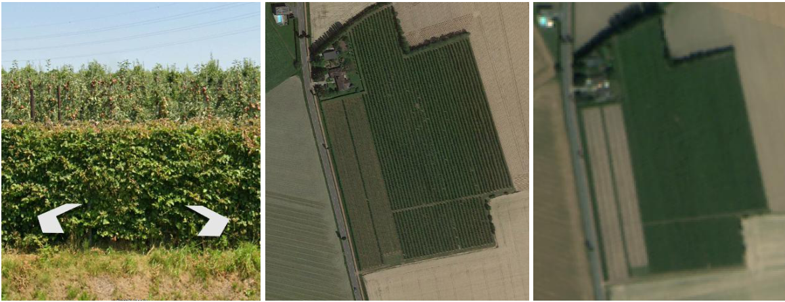
6 Terms of use and product technical support
6.1 Terms of use
The Terms of Use for the product(s) described in this document, acknowledge that:
“Free, full and open access to the products and services of the Copernicus Land Monitoring Service is made on the conditions that:
When distributing or communicating Copernicus Land Monitoring Service products and services (data, software scripts, web services, user and methodological documentation and similar) to the public, users shall inform the public of the source of these products and services and shall acknowledge that the Copernicus Land Monitoring Service products and services were produced “with funding by the European Union”.
Where the Copernicus Land Monitoring Service products and services have been adapted or modified by the user, the user shall clearly state this.
Users shall make sure not to convey the impression to the public that the user’s activities are officially endorsed by the European Union.
The user has all intellectual property rights to the products he/she has created based on the Copernicus Land Monitoring Service products and services.”1
6.2 Citation
When planning to publish a publication (scientific, commercial, etc.), it should be explicitly mentioned:
“This publication has been prepared using European Union’s Copernicus Land Monitoring Service information; <insert all relevant DOI links here, if applicable>”2
When developing a product or service using the products or services of the Copernicus Land Monitoring Service, it should explicitly mentioned:
“Generated using European Union’s Copernicus Land Monitoring Service information; <insert all relevant DOI links here, if applicable>”3
When redistributing a part of the Copernicus Land Monitoring Service (product, dataset, documentation, picture, web service, etc.), it should explicitly mentioned:
“European Union’s Copernicus Land Monitoring Service information; <insert all relevant DOI links here, if applicable>”4
6.3 Product technical support
Product technical support is provided by the product custodian through Copernicus Land Monitoring Service desk5. Product technical support does not include software specific user support or general GIS or remote sensing support.
More information on the products can be found on the Copernicus Land Monitoring Service website https://land.copernicus.eu/
7 List of abbreviations & acronyms
| Abbreviation | Name | Reference |
|---|---|---|
| ATBD | Algorithm Theoretical Basis Document | |
| AOI | Area of Interest | |
| CAP | Common Agricultural Policy | |
| CLC | Corine Land Cover | |
| CLMS | Copernicus Land Monitoring Services | land.copernicus.eu |
| COG | Cloud Optimized Geotiff | |
| CTY | Crop Type | |
| DOI | Digital Object Identifier | |
| DWH | Data WareHouse | |
| EEA | European Environment Agency | www.eea.europa.eu |
| EO | Earth Observation | |
| EPSG | European Petroleum Survey Group | |
| ESA | European Space Agency | |
| FAO | Food and Agriculture Organization | |
| FPN | Feature Pyramid Network | |
| FUA | Functional Urban Areas | |
| GIS | Geographic information system | |
| HR | High Resolution | |
| HRL | High Resolution Layer | |
| IPCC | Intergovernmental Panel on Climate Change | |
| JRC | Joint Research Center | |
| LAEA | Lambert azimuthal equal-area | |
| LC | Land Cover | |
| LULC | Land Use Land Cover | |
| MMU | Minimum Mapping Unit | |
| MMW | Minimum Mapping Width | |
| NDVI | Normalized Difference Vegetation Index | |
| NUTS | Nomenclature of territorial units for statistics | |
| NVLCC | Non Vegetated Land Cover Characteristics | |
| PSIL | Parent Scene Identification Layer | |
| PSU | Primary Sample Unit | |
| PUM | Product User Manual | |
| SCL | Scene Classification Layer | |
| SDG | Sustainable Development Goal | |
| SLF | Small Landscape Features | |
| SSU | Secondary Sample Unit | |
| STL | Street Tree Layer | |
| SWF | Small Woody Feature | |
| TCD | Tree Cover Density | |
| UA | Urban Atlas | |
| UK | United Kingdom | |
| UN | United Nations | |
| UTM | Universal Transverse Mercator | |
| VHR | Very High Resolution | |
| VLCC | Vegetated Land Cover Characteristics | |
| WVL | Woody Vegetation Layer |
8 References
Bastani, F., Wolters, P., Gupta, R., Ferdinando, J., & Kembhavi, A. (2023). Satlaspretrain: A large-scale dataset for remote sensing image understanding. In Proceedings of the IEEE/CVF International Conference on Computer Vision (pp. 16772-16782).
Chen, D., & Stow, D. (2002). The effect of training strategies on supervised classification at different spatial resolutions. Photogrammetric Engineering and Remote Sensing, 68(11), 1155-1162.
Metzger, M. J. (2018). The Global Environmental Stratification: A high-resolution bioclimate map of the world. The University of Edinburgh: Edinburgh, UK. https://doi.org/10.7488/ds/2354.
Ronneberger, O., Fischer, P., & Brox, T. (2015, October). U-net: Convolutional networks for biomedical image segmentation. In International Conference on Medical image computing and computer-assisted intervention (pp. 234-241). Cham: Springer international publishing.
9 Document history
| Version | Date | Short description of changes |
|---|---|---|
| 1.0 | 16.09.2025 | Initial published issue |
| 1.1 | 20.11.2025 | Addition of STL related sections |